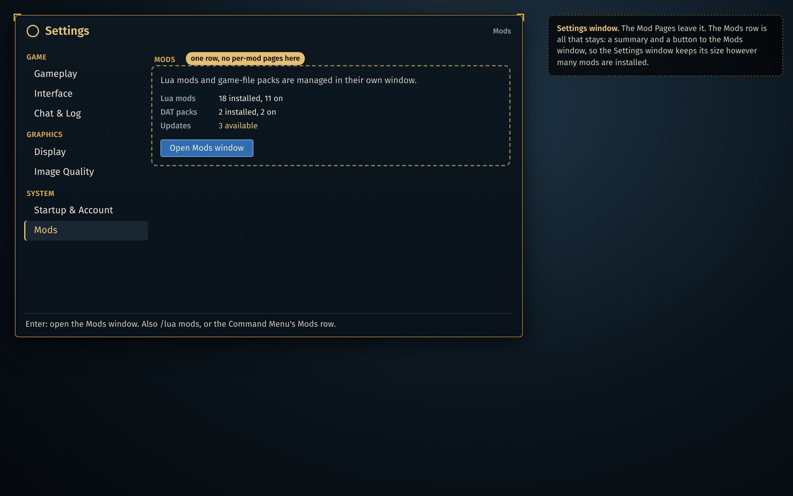
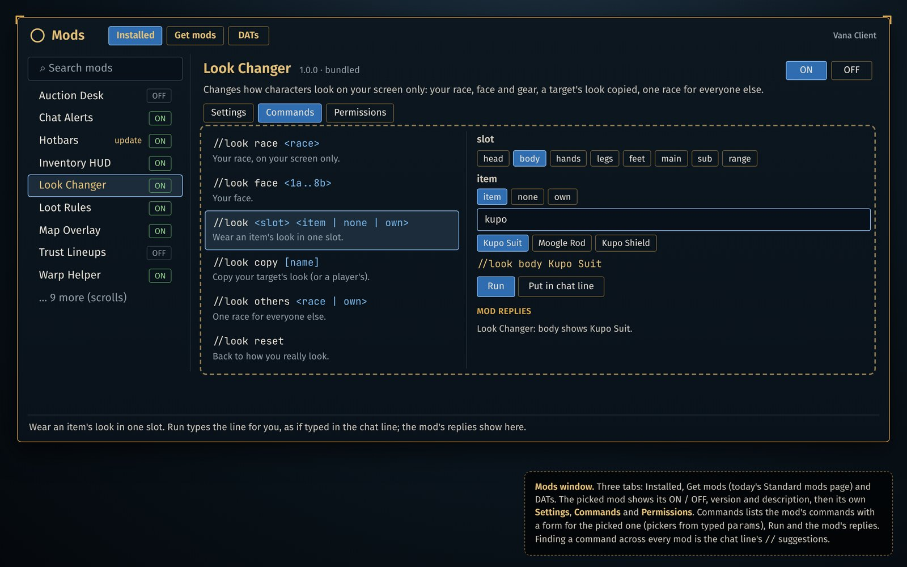
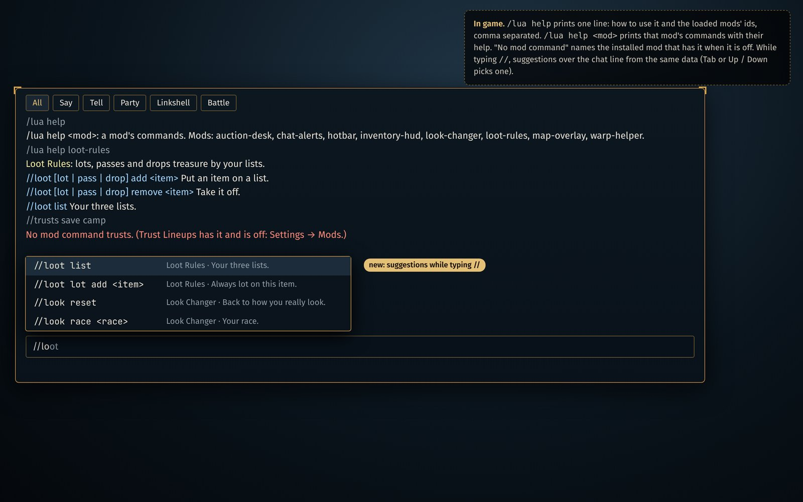
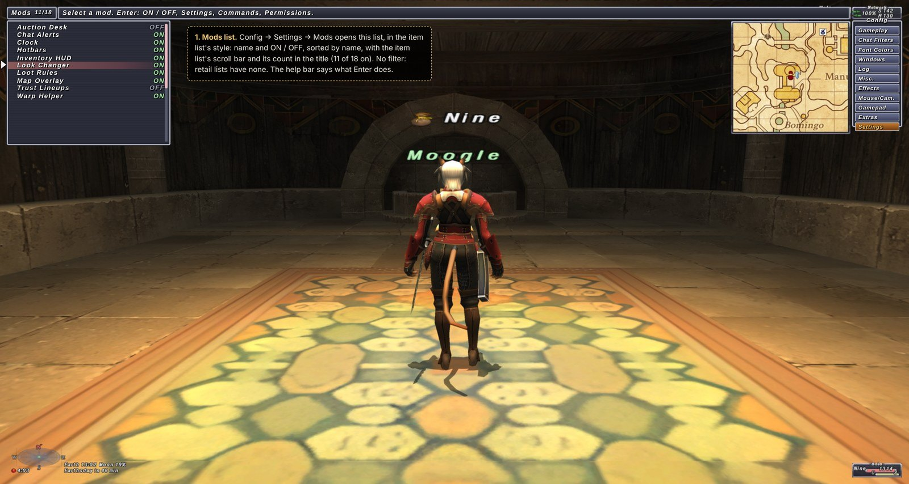
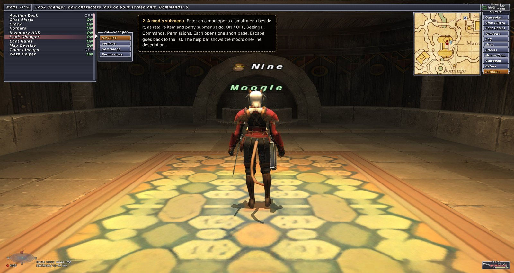
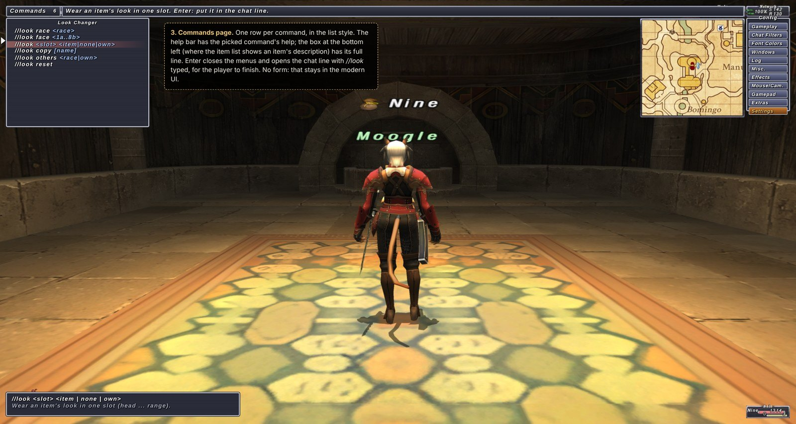
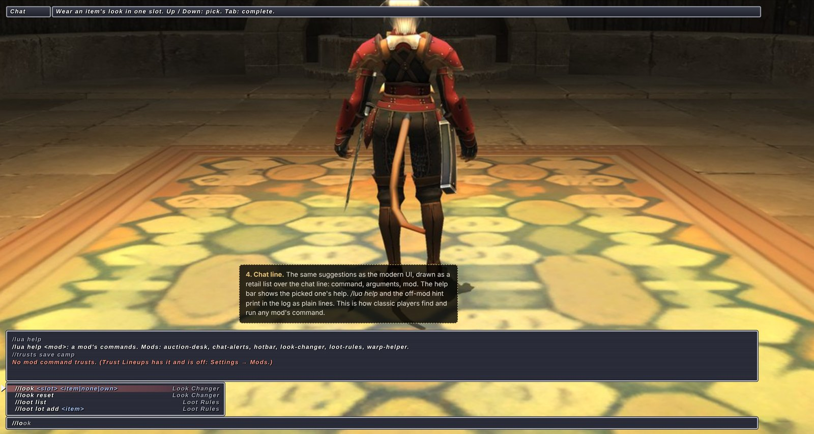

Hi lenonk,
You turned down #132 (listing each mod's chat commands in its description), and you were right: the problem it papered over is that the mod system and the player barely talk to each other. A player who turns on a mod has no way to learn what it can do without reading its code. This page is a proper design for that, built on the patterns the mod system already has. The mockups show the idea; the layout and names are yours to change. The questions I'd like you to decide are collected at the end.
Declare a mod's commands in mod.toml, the same way settings are declared today, and let the client present
them: in a Mods window, in game with /lua help, and as suggestions while typing //.
Settings already work this way ([settings.<key>], drawn by the client, read with
settings.get). Commands are the missing half: today they exist only once a mod has loaded and called
commands.register, with no text the client can show.
One [commands.<name>] table per command; the name is the word after //, and file order
is display order.
[commands.ahbuy]
args = "<item> <price> [stack]"
help = "Bid on an item at the auction house in front of you."
[commands.bags]
help = "The items the Inventory HUD counts."
forms = [
{ args = "add <item>", help = "Count an item." },
{ args = "addkey <key item>", help = "Count a key item." },
{ args = "remove <name>", help = "Stop counting it." },
{ args = "list", help = "What it counts." },
]description.lua, a game command) stops the mod loading with a
clear message. Old clients ignore the table, so mods stay loadable everywhere.commands.register("x") has a [commands.x].commands.usage(name), returns the declared lines, so the 17 bundled mods that keep their
own USAGE string can print the manifest's text instead.Per-mod pages in the Settings window would make it grow with every mod installed. So everything about mods moves into its own Mods window. The Settings window keeps a single Mods row: a summary and a button that opens the window.

/lua mods.
[settings] rows), Commands and Permissions (today's grant rows).A mod's Commands tab works like the Game Master window: the commands on the left, a form for the picked one on the right, the line it will type, Run and Put in chat line, and the mod's replies. Run goes through the normal command path, so the mod gets it as the player's input and no new permission is involved.
Plain args give a text box per word. Pickers (a list of choices, item names, zones, party members) need
typed parameters, which are optional:
[commands.look]
help = "Change how you look, on your screen only."
forms = [
{ args = "<slot> <item | none | own>", help = "Wear an item's look in one slot.", params = [
{ name = "slot", type = "enum", options = ["head", "body", "hands", "legs", "feet", "main", "sub", "range"] },
{ name = "item", type = "item", also = ["none", "own"] } ] },
]Types would be the settings types plus game data the client can already list (item,
key_item, zone, spell, job, player). Since words split at
spaces and quotes don't group, the form writes //look body Kupo Suit and the mod joins the words, as
mods do now.
/lua help prints one line however many mods are loaded:
/lua help <mod>: a mod's commands. Mods: auction-desk, hotbar, loot-rules, …/lua help <mod> prints that mod's commands with their help; /lua help <command> prints one.//: the matching commands over the chat line, with the mod and the
help. Up / Down picks, Tab completes. Loaded mods only.
/lua help, /lua help loot-rules, the off-mod hint, and suggestions over the chat line (modern UI).A classic player should never be shown modern UI unless it's absolutely necessary, so classic doesn't get the Mods window drawn over it. It uses what classic players already use: the chat line, and short retail-style menus.
// suggestions and /lua help work in classic
too, drawn in the retail style.



The settings design is right; the gap is what the page can't draw yet, which pushes options into commands.
string, colour and key settings (docs/lua-mods.md 4.12 already lists them;
the key element you added for mod windows in 77b9dfd fits key).//x on|off, //x size 3) into
[settings]. Lists the player builds (//bags add <item>) stay commands.One PR per step, each branched from master and usable on its own.
[commands] parsed and validated; guide.md and reference/commands.md; mods.installed() gains commands; stubs regenerated; every bundled mod's commands declared and the catalogue regenerated./lua help, the off-mod hint, // suggestions, commands.usage.string, colour, key rows, then the settings audit of the bundled mods.params, the form and Run (modern UI).register? This puts commands in mod.toml so they're readable before load. Would you rather have commands.register(name, fn, { args, help }), or both?args / help / forms, or a single usage list of strings?aliases = ["ahb"] in the same table now, or later?/lua help, //help, or something else?help take a per-language table from the start?params the way to get pickers, or should a mod build its own form with ui.window?// suggestions over the chat line, in both UIs?tab / place, e.g. Map Overlay): stay where the replaced feature had them, or move to the mod's Settings tab?opens = true so the mod's header shows Open?Thanks for reading. Happy to rework any of this, or to start with step 1 alone, which is small and useful by itself. — Steven